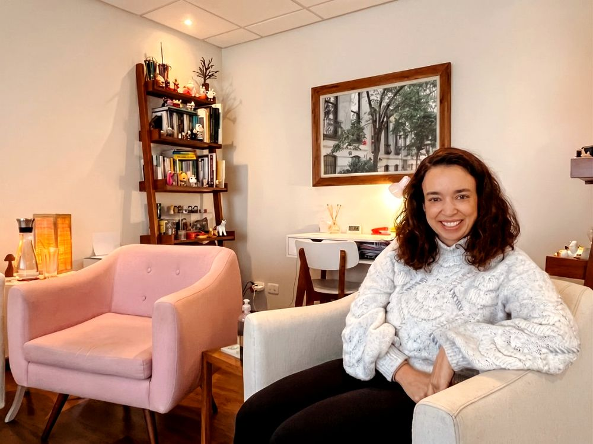

Espaço seguro para acolher sua dor e ressignificar sua história.
Psicóloga clínica especialista em Teoria do Apego e Neurociência. Atendo adultos e crianças/adolescentes com um processo terapêutico acolhedor, empático e cientificamente fundamentado.
Online & Presencial Adulto e Infantojuvenil Colaboradora UNIFESP (PROALU)
Atendimento Online & Presencial|Adulto e Infantojuvenil|Ambiente Seguro e Confidencial|Escuta Empática e Personalizada

Biografia
Sobre Mim
Olá, sou a Renata Lage Humes. Minha missão como psicóloga é construir uma base segura para que você possa explorar suas emoções, dores e anseios. Compreendo que cada trajetória é única e merece um olhar atento, livre de julgamentos e focado no acolhimento.
Minha prática clínica é guiada principalmente pela Teoria do Apego de John Bowlby, que investiga como nossos primeiros vínculos moldam a forma de nos relacionarmos e de regularmos a ansiedade ao longo da vida. Essa abordagem articula contribuições da psicanálise, da etologia e da psicologia comportamental, aprofundada por evidências da neurociência do desenvolvimento.
Além disso, tenho a honra de integrar como colaboradora o Ambulatório do Luto da UNIFESP, onde atuo no suporte clínico a pessoas que enfrentam a dor da perda e buscam ressignificar suas vidas diante da ausência.
Formação & Atuação
01
Graduação em PsicologiaUniversidade Presbiteriana Mackenzie
02
Especialização em Teoria do ApegoInstituto Quatro Estações
03
Pós-Graduação em Neurociência e ComportamentoPUC RS
Atendimento
Áreas de Atuação
Ofereço suporte especializado para diversas demandas emocionais, com objetivo de melhora na saúde mental e qualidade de vida.
Psicoterapia com Crianças
O espaço lúdico é central no meu trabalho: é no brincar que a criança elabora vivências, organiza emoções e comunica aquilo que ainda não consegue colocar em palavras. Paralelamente, o trabalho com os pais fortalece a corregulação no dia a dia.
Psicoterapia com Adolescentes
Priorizo construir um vínculo de confiança e um espaço seguro em que o adolescente possa pensar sobre si, fortalecer sua autoestima, nomear o que sente e experimentar novas formas de regular emoções, sem julgamento.
Psicoterapia com Adultos
Espaço semanal de escuta e troca dedicado à sua necessidade emocional, identificação de barreiras internas e autoconhecimento. Foco em demandas relacionais, ansiedade, depressão, transições de carreira e desenvolvimento pessoal.
Teoria do Apego
Os 4 Estilos de Apego
Nossos primeiros vínculos criam modelos internos que influenciam como nos relacionamos na vida adulta. Clique em cada estilo para entender como ele se manifesta.
Confiança nos vínculos, capacidade de intimidade e autonomia equilibrada. Pessoa confortável com proximidade emocional e capaz de pedir ajuda quando necessário, sem perder sua individualidade.
Busca constante por validação e medo intenso de abandono. Tendência a hiperativar o sistema de apego — monitorando sinais de rejeição e buscando proximidade excessiva como forma de regulação.
Desativação do sistema de apego — valorização extrema da autossuficiência. Desconforto com intimidade emocional e tendência a minimizar a importância dos relacionamentos como defesa inconsciente.
Oscilação entre buscar e temer a proximidade. Frequentemente associado a experiências de cuidado imprevisível. A figura de apego era ao mesmo tempo fonte de conforto e de medo.
Choque
Saudade
Raiva
Aceitação parcial
Ressignificação
Luto e Perda
O luto não é linear
O luto não ocorre em fases rígidas ou sequenciais. Cada pessoa vivencia a perda de maneira única — com idas e vindas, momentos de avanço e retorno.
Na terapia, oferecemos um espaço seguro para que sua dor seja ouvida sem pressa, ajudando a integrar essa perda à sua história e restabelecer o equilíbrio emocional.
O consultório físico está estrategicamente situado para oferecer acessibilidade e conveniência, com instalações preparadas para o seu conforto. Atendimento online em todo o Brasil e exterior.
Endereço JardinsAlameda Lorena, 800 - Jardins, São Paulo - SP
Endereço HigienópolisAvenida Angélica, 2071 - Higienópolis, São Paulo - SP
Durante décadas, muita gente aprendeu a imaginar o luto como uma sequência de “fases”: negação, raiva, barganha, tristeza e aceitação. O problema é que, no dia a dia, ninguém vive o luto assim. A ideia de fases costuma criar uma expectativa de linearidade (“agora eu estou na fase X, depois passo para a Y”) e, sem perceber, vira uma régua: “já era para eu ter superado”, “estou atrasada”, “estou fazendo errado”. Modelos rígidos e prescritivos podem atrapalhar, porque o luto é individual, variável, irregular e profundamente influenciado por contexto, história e tipo de perda.
Por que a metáfora das “fases” não dá conta
A crítica não é dizer que emoções como negação ou raiva não existam. Elas existem e são comuns. A questão é que elas não aparecem em uma ordem fixa, nem com a mesma intensidade, nem com começo e fim bem definidos. É frequente que sentimentos opostos coexistam: tristeza e alívio, saudade e raiva, gratidão e revolta. É comum também que a pessoa tenha um dia “bom” e, no dia seguinte, sinta que regrediu. Isso não significa que o luto está piorando: significa que ele está acontecendo. Ou seja, o luto não é uma escada, ele se comporta mais como um movimento vivo, com idas e vindas.
Um modelo mais realista: o processo pendular
Uma forma muito útil de entender esse vai-e-vem e o que guia meu trabalho é o Modelo do Processo Dual (Dual Process Model), de Stroebe e Schut. Ele descreve o luto como uma oscilação entre dois polos:
Orientação para a perda: dor, saudade, lembranças, choro, contato com a ausência.
Orientação para a restauração: lidar com a vida prática, reorganizar rotina, novos papéis, reconstruir o cotidiano.
A oscilação é parte saudável do processo. A pessoa não fica o tempo todo encarando a dor, nem o tempo todo “se distraindo”: ela alterna conforme consegue, conforme o corpo aguenta e conforme a vida exige.
Luto não é “superar”: é integrar
Outro ponto que muda muito a forma de cuidar de si (e de acolher alguém enlutado) é entender que o luto raramente termina como “apagamento”. Para muitas pessoas, a perda vira uma cicatriz: não é uma ferida aberta o tempo todo, mas é algo que faz parte da história. A elaboração do luto costuma envolver integrar a ausência à vida, reconstruir sentido, reorganizar identidade e, quando faz sentido, manter vínculos contínuos de forma saudável (lembranças, rituais, valores, presença simbólica). Essa perspectiva aparece em modelos contemporâneos como “continuing bonds” e reconstrução de sentido.
Por que a psicoterapia ajuda: acolhimento, escuta e repetição
Muitos enlutados relatam um paradoxo: precisam falar, mas sentem que viraram um “peso”. Com o tempo, podem se inibir: evitam repetir o assunto, minimizam a dor, poupam amigos e familiares, ou percebem que as pessoas ao redor já “seguiram em frente”. A psicoterapia oferece um espaço diferente: um lugar onde a dor não precisa ser editada para caber no outro. É um espaço de acolhimento, de sustentação emocional e de construção de recursos para atravessar o pêndulo do luto.
E aqui entra um ponto essencial: a repetição. Repetir não é “ficar preso”; muitas vezes é o jeito que a mente tem de tentar dar forma ao indizível. Contar e recontar a história, revisitar detalhes, voltar aos mesmos sentimentos quando feito em um ambiente de escuta pode ajudar a transformar uma experiência traumática e fragmentada em algo mais narrável, simbolizável e integrável. Isso não elimina a saudade, mas pode diminuir o terror, a culpa, a sensação de colapso e a solidão psíquica.
Em resumo
Luto não é uma sequência de fases previsíveis; ele é singular e não linear.
O processo costuma ser pendular, alternando entre contato com a perda e reconstrução do cotidiano.
A perda não “some”; ela pode ser elaborada, integrada e ressignificada, como uma cicatriz que passa a fazer parte da história.
A psicoterapia pode ser um lugar de acolhimento e repetição elaborativa, especialmente quando a pessoa se sente sozinha, culpada ou sem espaço para falar.
Se a Teoria do Apego explica por que uma criança busca proximidade quando está com medo ou insegura, ela também ajuda a entender algo muito comum na vida adulta: por que certas relações nos deixam tão ansiosos, por que algumas pessoas se afastam quando a intimidade aumenta, ou por que repetimos padrões mesmo quando “sabemos” que não nos fazem bem. A proposta central não é simplista (“culpa da infância”), e sim relacional: experiências repetidas com cuidadores constroem um tipo de mapa interno sobre o que esperar do outro e de si mesmo. Esse mapa que Bowlby chamou de Modelos Operativo Interno (MOI) influencia nossas relações ao moldar como interpretamos sinais de proximidade e distância, como regulamos emoções e como buscamos segurança quando estamos vulneráveis.
Na vida adulta, o sistema de apego continua existindo e tende a se ativar nos momentos em que estamos emocionalmente expostos: início de relacionamento, conflitos, mudanças importantes, doença, luto, estresse intenso, ou qualquer situação em que a sensação de segurança fique abalada. Em termos práticos, isso significa que há um mecanismo real de alarme. Quando o apego é acionado, nosso cérebro começa a buscar garantias de vínculo e cada pessoa faz isso do jeito que aprendeu ao longo da vida. Por isso, falar de apego na vida adulta não é rotular, mas entender estratégias que surgiram como formas de proteção.
Estilos de apego na vida adulta
Pessoas com tendência ao apego mais seguro costumam se sentir relativamente confortáveis com intimidade e autonomia: conseguem se aproximar sem se anular, toleram períodos de distância sem entrar em desespero e conseguem conversar sobre conflitos com menos medo de abandono ou humilhação.
Já quem apresenta um padrão mais ansioso tende a experimentar a relação como um lugar de risco: qualquer demora na resposta, mudança de tom, silêncio ou afastamento pode ser sentido como sinal de rejeição. A mente entra em hipervigilância, cresce a ruminação e a necessidade de confirmação (“está tudo bem?”, “você ainda gosta de mim?”), e pode aparecer controle, testes, cobranças, ou uma sensação persistente de estar “por um fio”.
No polo oposto, pessoas com tendência evitativa frequentemente lidam com a proximidade intensa como ameaça: dependência emocional pode ser vivida como perda de liberdade, e a vulnerabilidade pode gerar desconforto. Em vez de pedir cuidado, a estratégia costuma ser se fechar, minimizar necessidades, racionalizar e se afastar quando a relação exige mais profundidade.
Em alguns casos, existe ainda um padrão mais temeroso/desorganizado: a pessoa deseja intimidade, mas teme ser ferida, controlada ou abandonada; oscila entre aproximação e fuga, com relações que alternam intensidade e colapso. Esses estilos não são sentença e sim tendências, e podem se transformar ao longo da vida.
Diferentes estratégias frente à vulnerabilidade
Uma das contribuições mais úteis da teoria do apego é explicar por que certas combinações se repetem. É muito comum, por exemplo, que uma pessoa mais ansiosa se conecte com alguém mais evitativo: quanto mais um busca confirmação, mais o outro se sente invadido e se afasta; quanto mais o outro se afasta, mais o primeiro entra em alarme e intensifica a busca, reforçando seu medo de perda. Isso não acontece porque “um ama mais que o outro”, mas porque ambos estão tentando se proteger do que percebem como ameaça. A teoria ajuda a tirar o julgamento moral do centro (“você é frio”, “você é carente”) e colocar a lente na função emocional: “quando eu me sinto inseguro, eu faço o quê?”. Em muitos casos, a briga do casal não é sobre o tema explícito (mensagem, ciúmes, rotina), mas sobre a pergunta silenciosa por trás: “posso contar com você?” e “eu sou suficiente para você?”.
Como a psicoterapia baseada na Teoria do Apego pode fazer diferença
O foco central é ampliar consciência e agência: identificar quais situações ativam o alarme, como o corpo responde, quais pensamentos aparecem, quais comportamentos entram em cena e quais consequências isso produz no vínculo. Muitas pessoas chegam na terapia com uma sensação de inevitabilidade: “sou assim”, “sempre vou reagir assim”, “sempre escolho o mesmo tipo de pessoa”. A partir do apego, a terapia propõe outra lógica: você aprendeu estratégias para sobreviver emocionalmente e hoje pode construir repertórios mais seguros e menos custosos. Isso inclui aprender a pedir de maneira mais direta, sustentar limites sem culpa, tolerar frustração sem entrar em pânico, diferenciar perigo real de perigo emocional aprendido e, principalmente, perceber que vulnerabilidade não precisa significar dependência total nem retraimento total.
Um ponto delicado e muito potente é que a própria relação terapêutica vira parte do processo. Na teoria do apego, segurança é relacional: pessoas mudam quando têm experiências repetidas de previsibilidade, escuta e reparo. Terapia não é “um lugar onde alguém dá respostas”, mas um espaço onde você pode se ver em relação, observar seus movimentos de aproximação e defesa, e construir uma experiência emocional mais organizada. Ao longo do tempo, muitos pacientes desenvolvem aquilo que alguns autores chamam de “segurança adquirida”: mesmo que a história tenha sido marcada por insegurança, é possível desenvolver maior estabilidade interna e confiança nos vínculos, especialmente quando há trabalho consistente e experiências de cuidado mais confiáveis no presente.
Conclusão
Por fim, talvez o ponto mais importante: a Teoria do Apego não existe para aprisionar o sujeito em uma explicação. Ela existe para devolver liberdade. Quando você entende por que faz o que faz sob estresse, você deixa de viver apenas reagindo aos gatilhos. Você começa a reconhecer escolhas, construir limites, buscar relações mais recíprocas e cuidar da própria regulação emocional com mais maturidade. Apego não é sobre “ser forte” ou “ser fraco”. É sobre como a mente humana aprende a buscar segurança e como podemos fazer isso de um jeito mais saudável.
A Teoria do Apego nasce de uma pergunta simples e profunda: o que mantém um bebê vivo e psicologicamente seguro quando ele depende totalmente de um cuidador? John Bowlby formulou a ideia de que o apego não é apenas “carinho” ou “hábito”, mas um sistema inato de proteção, selecionado evolutivamente: diante de ameaça, dor, cansaço ou separação, a criança busca proximidade de uma figura cuidadora. Esse vínculo funciona como porto seguro (para acalmar) e base segura (para explorar). Bowlby desenvolveu essa formulação em sua obra “Attachment and Loss”, destacando o papel adaptativo do apego e como a separação/ameaça ativa comportamentos de busca e protesto.
Diálogo com múltiplos campos científicos
Uma força da teoria é ter sido construída em diálogo com diferentes campos. Bowlby foi influenciado pela psicanálise por pensar o vínculo e o desenvolvimento emocional como centrais. Para ele há também uma noção de inconsciente, porém, numa perspectiva de hábitos emocionais e desejos oriundos de experiências relacionais e padrões aprendidos na infância. O estudo da etologia o ajudou a deslocar a ideia de que o apego se explicaria apenas por alimentação. Nesse campo, o comportamento de proximidade e busca de proteção em filhotes aparece como padrão observável em diferentes espécies, reforçando o caráter adaptativo do apego. Ele também dialogou com a psicologia comportamental no entendimento de que os padrões de apego são mantidos e moldados pelas respostas do ambiente.
O grande salto empírico e a Situação Estranha
O grande salto empírico veio com Mary Ainsworth, que observou famílias longitudinalmente e, depois, desenvolveu um procedimento de laboratório: o teste da Situação Estranha, que permitiu identificar padrões de resposta da criança à separação e ao reencontro com o cuidador. A partir disso, descreveu estilos de apego: seguro, evitativo e ansioso ambivalente, vinculando-os à qualidade do cuidado (especialmente sensibilidade e responsividade). Posteriormente, Mary Main e colaboradores propuseram a categoria de apego desorganizado, frequentemente associada a contextos em que a figura de apego é simultaneamente fonte de conforto e de medo, o que “quebra” a estratégia coerente da criança em momentos de estresse.
Diálogo atual com a neurobiologia
Hoje, a Teoria do Apego dialoga com a neurobiologia por meio de um campo interdisciplinar chamado Neurobiologia Interpessoal (NBIP). Esse diálogo provou empiricamente o que John Bowlby defendia: as relações humanas moldam diretamente a estrutura física e o funcionamento do cérebro. O cérebro é visto hoje como um órgão social que necessita da conexão com outro cérebro para se desenvolver e se autorregular. Além disso, diferentes tipos de apego estão relacionados a diferentes funcionamentos cerebrais em termos de química e ativação.
Quando falamos em “acalmar uma criança” (ou a nós mesmos), é comum reduzir a cena a um objetivo externo: parar o choro, parar a birra, parar o ataque, “voltar ao normal”. Só que regulação emocional não é um botão de desligar comportamento. Regulação é um processo interno: é a capacidade de atravessar uma emoção intensa sem perder completamente o eixo e depois recuperar o equilíbrio.
Na infância, esse processo não nasce pronto. A criança pequena não tem ainda maturidade neurológica e psicológica para sustentar estados emocionais fortes com autonomia. Por isso, do ponto de vista do desenvolvimento, a regulação começa como corregulação: primeiro acontece no encontro com o cuidador, para depois ser internalizada. É aí que a teoria do apego ajuda: quando uma criança se desorganiza, o que ela mais procura não é “ser convencida”, mas se sentir segura. A emoção intensa é um tipo de alarme: o corpo entra em modo de ameaça, o pensamento encurta, o impulso domina. Nessa hora, pedir racionalidade (“para com isso”, “não é nada”, “você está exagerando”) costuma falhar porque o cérebro não está operando no modo da reflexão, está operando no modo da sobrevivência.
O papel do adulto na corregulação
Por isso, a forma como o adulto se coloca na cena muda tudo. O adulto não precisa estar “zen”, mas precisa estar suficientemente estável para não entrar na mesma tempestade. Isso significa: manter presença, sustentar o limite e proteger o vínculo ao mesmo tempo. A criança aprende não só com aquilo que o adulto diz, mas com aquilo que o adulto encarna: o tom de voz, o ritmo, a postura, a previsibilidade. É esse “contorno” que vai ensinando ao corpo infantil que a emoção pode existir sem virar catástrofe.
Empatia não é permissão
Aqui entra um ponto delicado: empatia não é permissão. Empatia é reconhecer a experiência emocional do outro sem humilhação, sem moralismo e sem correção excessiva. É conseguir dizer algo como: “isso te frustrou muito” ou “você ficou com medo” sem transformar a criança em “dramática” ou “ruim”. Mas empatia também não é resolver o problema nem ceder para evitar desconforto. Na prática, a fórmula mais potente costuma ser: acolhimento + limite + alternativa. Acolho o que você sente, mantenho o que é necessário, ofereço um caminho possível. Isso cria segurança porque a criança percebe duas coisas ao mesmo tempo: “meu sentimento não me desqualifica” e “o mundo ainda tem borda”.
A estruturação da autorregulação
Quando esse processo se repete ao longo do tempo, acontece a parte mais bonita da regulação emocional: ela vira estrutura. A criança passa a desenvolver uma “memória corporal” de que existe saída, ou seja, de que não precisa atacar, fugir, grudar ou colapsar para ser cuidada. Ela aprende, por experiência, que emoções são transitórias e suportáveis, e que relacionamentos podem sustentar tensão sem quebrar. Essa é uma base silenciosa para o futuro: mais tolerância à frustração, mais capacidade de nomear o que sente, mais flexibilidade para pensar soluções, menos necessidade de anestesia (seja por tela, por compulsões, por explosões).
E como fica a regulação do próprio adulto?
E o adulto? O adulto também precisa se regular. Grande parte do que chamamos de “dificuldade de acalmar a criança” é, na verdade, o momento em que a emoção da criança aciona a emoção do adulto: raiva, impotência, vergonha (“vão me julgar”), medo (“e se ela nunca parar?”), história pessoal (“na minha casa não podia”). Nesses momentos, o que ajuda é lembrar que regular não é eliminar emoção, é impedir que ela vire comando. O adulto pode estar irritado e ainda assim escolher uma postura mais reguladora: respirar, reduzir discurso, baixar o tom, simplificar frases, interromper escalada e retomar depois.
A importância do reparo relacional
Por fim, vale uma ideia que muda a qualidade da parentalidade: reparo. Mesmo um cuidador responsivo vai falhar às vezes. A diferença está em reparar: “eu gritei, eu me exaltei, eu fiquei sem paciência. Desculpa. Vamos tentar de novo.” Reparo não é fragilidade, é maturidade emocional. Ele ensina que relações suportam erros e podem voltar ao eixo. E, para uma criança, isso é ouro: ajuda a construir segurança interna sem exigir perfeição do cuidador.
Regulação emocional, no fundo, é isso: menos performance e mais vínculo. Menos “controle do comportamento” e mais construção de recursos internos. Acalmar não é vencer a criança. É ajudá-la a atravessar um estado que ela ainda não consegue atravessar sozinha até que um dia ela consiga.